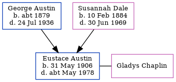

George Frederick Austin 1904 - 1959
[ Home ] | [ Calendar ] | [ Surnames Index ] | [ Census Index ] | [ Family History ]An inspector london transport bus and the eldest of 5 children of George Austin (a baker's assistant) and Susannah Dale, George Austin, the third cousin once-removed on the father's side of Nigel Horne, was born in Chartham, Kent, England on May 11, 19041,2,3, was baptized there at St Mary on May 29, 1904. He married Hilda Barratt (with whom he had 1 surviving child, Coralie G) in Marylebone, London, England around May 19355.
During his life, he was living at 2 Heaton Cottages, Heaton Road, Canterbury, Kent, England on Apr 2, 19116; at 14 Roughdown Avenue, Hemel Hempstead, Hertfordshire, England on Sep 29, 19391; and at 28 Third Avenue, Chelmsford, Essex, England in 1959.
He died on Nov 23, 1959 at Chelmsford Hospital in Chelmsford3,4.
Parents
- George Frederick was born c. 1879
- Susannah Elizabeth was born on Feb 10, 1884
Citations
- 1939 Register - Findmypast (was the head of the household)
- England & Wales births 1837-2006 - Findmypast
- England & Wales deaths 1837-2007 - Findmypast
- England & Wales Government Probate Death Index 1858-2019 - Findmypast
- England & Wales Marriages 1837-2005 - Findmypast
- 1911 Census for England & Wales - Findmypast (was age 6 and the son of the head of the household)
Media
George Frederick Austin

England & Wales births 1837-2006 - BMD/B/1904/2/AZ/000023/034
1911 Census For England & Wales - GBC-1911-RG14-04325-0295-3
England & Wales marriages 1837-2005 - BMD/M/1935/2/AZ/000041/114
England Births - R_885427476
Kent Baptisms - GBPRS/CANT/B/96782469
Kent Baptisms - GBPRS/CANT/B/96782587
1939 Register - TNA/R39/1608/1608C/015/17
England & Wales Government Probate Death Index 1858-2019 - GBOR/GOVPROBATE/C/1960-1960/00006863
England & Wales deaths 1837-2007 - BMD/D/1959/4/AZ/000029/129
Family Tree
Generated by ged2site. Last updated on Jun 11, 2024